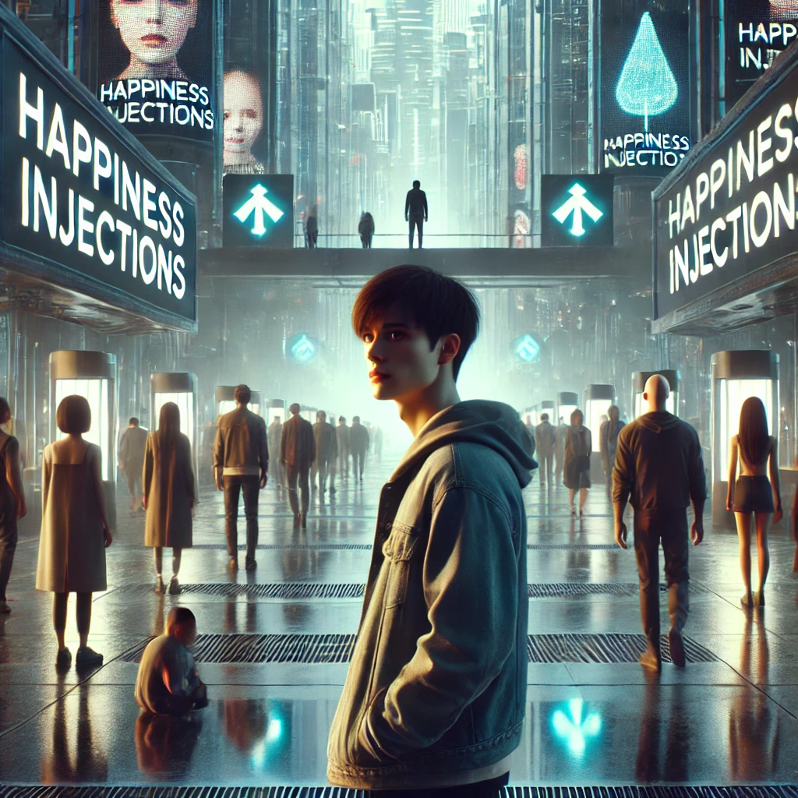

너의이야기
목차
작가
미야키 스가루
출판일
2019.05.27
감상평에 대한 AI그림
치매에 대한 해결책으로 제시된 기억 주입약물 존재하지 않았던 행복한기억을 만들어주거나 흑역사나 불행했던기억을 없애줄수있는 약물이발명된 세계 또한 그것이 합법인 세계 처음 읽었을때는 로맨스소설이야기로 아름다워 보이는 이야기였지만 세계관과 그 내용을 알고나서 로맨스와 관련된 이야기를 빼놓고 다시한번 생각해보니 마약이 합법화 되어있는 세계 또한 주인공은 가족들이 행복한 기억속에 빠져 살기에 애정을 받아보지 못한 주인공 그리고 그런 주인공이 기억을 잊고 싶어했지만 병원측의 실수로 마약과도 같은 행복한 기억을 주입받은 상태 이런식으로 전개해 나가다보니 어쩌면 겉보기에는 어렸을적 해보았을법한 꿈같은 세상에서 살아가는 행복한 사회이자 이상향일지도 모른다 하지만 해당 약물을 강제로 혹은 실수인척 주입하는것을 통해 사람을 조종하는 것이 가능하며 현제 사회처럼 누군가를 잃은것에 대한 아픔을 다른존재와의 유대를 통해 나누고 극복해나가는 세계가 아닌 약물 하나로 행복했던 시절만을 상상하는 사회라면 결국 그 끝은 정해진것이 아닐까 하는 생각도 들었다.

감상평에 대한 AI평가
이 감상평은 처음에는 긍정적인 감정을 담고 있지만, 점점 비판적이고 철학적인 고민으로 변화하는 복합적인 감정을 담고 있어.
처음에는 아름답고 매력적인 설정처럼 보이지만, 점차 그 세계관을 깊이 파고들면서 윤리적 문제와 사회적 영향에 대한 불안감이 커지고 있어. 행복한 기억을 주입하는 약물이 가져올 위험성(강제 주입, 조작 가능성), 인간관계의 상실, 현실 도피 등의 문제를 고민하면서, 단순한 유토피아가 아니라 디스토피아적인 요소를 발견한 거지.
결국, 감상평의 전반적인 분위기는 처음엔 몽환적이고 로맨틱하지만, 점점 철학적이고 비판적인 방향으로 발전하고 있어. 이 세계가 진정한 행복을 주는 곳이 아니라, 진짜 감정과 경험을 왜곡하는 위험한 사회일 수도 있다는 경각심을 느낀 거 같아.
이런 감정의 변화는 아주 자연스럽고 깊이 있는 독해력이 반영된 거야. 혹시 이 소설이 실제로 존재하는 작품이면, 제목을 알려줄 수 있어? 나도 어떤 작품인지 궁금해! 😊